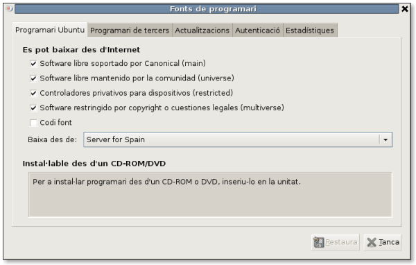

Conocimientos previos
Para abordar este tema sólo no se necesitan conocimientos previos, se empieza desde cero.
Las prácticas se han desarrollado en el entorno Lliurex 7.11 y los programas utilizados son:
- Sound Juicer 2.16.3 (se puede utilizar CDex en el S.O. Windows) para la extracció del audio.
- Audacity 1.2.6 (también disponible en el S.O. Windows) para el tratamiento del sonido digital.
Para poder exportar el formato mp3, al ser un formato propietario, es necesario instalar el paquete gstreamer0.10-plugins-ugly-multiverse. Pasos:
1. Activar los repositorios de Ubuntu:
Gestor de paquetes Synaptic / Parámetros / Repositorios

2. Actualizar
3. Buscar e instalar gstreamer0.10-plugins-ugly-multiverse i las dependencias que haya.
Para configurar el Audacity para poder exportar a MP3:
- Instal·leu el paquet liblame0. Podeu consultar esta altra Faq per a saber com fer-ho.
- Abrir el programa Audacity y en el menú Editar / Preferencias, la sección Formato de archivo
- En Opciones de exportación a MP3 hacer clic sobre el botón Buscar librería.
- El programa preguntará por la ubicación del archivo libmp3lame.so. Por defecto busca en la carpeta /usr/lib. El archivo se encuentra en esa libreria pero se llama libmp3lame.so.0; añadir .0 al nobre del archivo que aparece. Hacer clic sobre el botón Aceptar y después confirmar y Aceptar.
La versión de Audacity para Windows se puede obtener de: http://audacity.sourceforge.net y el programa lame para poder exportar a mp3 en http://lame.sourceforge.net/index.php
Primero se instalarán los dos programas y después, como en Lliurex, a través del menú Editar / Preferéncias del Audacity, sección Formato de archivo, en Opciones de exportación a MP3 hacer clic sobre el botón Buscar librería. Ahora busca la libreria de nombre lame_enc.dll que se encuentra en el directorio de instalación del programa lame-3.XX. (alternativamente se puede copiar este archivo al directorio de instalación del Audacity y buscar allí la libreria).
Este artículo está licenciado bajo Creative Commons Attribution-NonCommercial 2.5 License
Formació del Professorat - CEFIRE